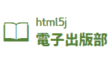
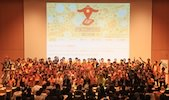

html5jは、HTML5などのWebプラットフォーム技術を使った「ものづくり」に関わるすべての人々を応援する、非営利・中立のコミュニティです。私たちは、日本のWebクリエイター・エンジニアのスキル向上をお手伝いして、日本が世界のWebシーンをリードするような存在になることを心より願っています。
html5jはWebクリエイター・エンジニアの皆さんに対し、「つながる」「学べる」「盛り上がる」を合言葉とし、以下の活動を行なっています。
Web開発に関する話題について質問したり、共有したりするためのメーリングリストです。また、勉強会の告知なども行なっています。
html5jメーリングリストに参加する 東京で開催しているhtml5j主催の勉強会です。2009年11月よりスタートし、現在では毎回100人近くもの方にご参加いただけるまでになりました。
勉強会の開催案内はhtml5jメーリングリストで行なっています。
ひとつのテーマを探求する「部活動」も行なっています。各部活動の勉強会告知や、トピックを絞った議論もhtml5jメーリングリストで行っています。
真新しい技術を実際に触ってみることを目的とした勉強会です。
業務システムでのWeb技術利用に関する勉強会を開催しています。
HTML5をこれから学びたいという方を対象にした勉強会を開催しています。
HTML5のマークアップについて考えるイベントを開催しています。
新しいWeb技術によって可能になる、マーケティングの未来を探究します。
Web技術と自動車の融合をテーマにイベントを開催しています。
技術で人を楽しませるということをテーマに活動をしています。
グローバルな舞台で活躍するWeb技術者を増やすことを目標に活動しています。
様々なプラットフォームでコードを動かすための知識を培う活動をしています。
データに基いてパフォーマンス計測・改善する知識や手法の普及を目的としています。
Web技術を活用した次世代出版の可能性を、技術面と産業面の双方から探ります。
TVに関わるすべてに対する可能性を追求すべく活動しています。
ロボット×Webでどこまで出来るかを追求しています。
html5jメーリングリスト
（Googleグループに移動）
投稿ルール
HTML5とか勉強会
部活動
味見部

エンタープライズ部
ビギナー部

マークアップ部

Webマーケティング部
自動車部
エンタメ技術部
英語部
Webプラットフォーム部
パフォーマンス部
電子出版部

TV部

ロボット部

html5jでは、HTML5とか勉強会や部活動のイベント以外にも、イベントの企画・運営をしています。
また、地域のWeb開発コミュニティが開催するイベントに参加させていただくこともあります。html5jでは主催に限らず、Web開発に関する勉強会・セミナーは積極的に応援したいと考えています。
2011年より、より多くの人がつながり、学べ、盛り上がるためのカンファレンスを開催しています。
2015年1月開催。「Web is Everywhere」をテーマに29セッションと展示を設け、約1,000人の方に参加いただきました。
2013年11月開催。30セッション、1,300人参加という過去最大規模のイベントになりました。
2012年9月開催。html5j単独主催、のべ1,000人の方に参加いただきました。
2011年8月開催。Googleと共催したhtml5j初のカンファレンスです。
2013年から開催している全国規模のWeb開発者向けイベント「<htmlday>」、2014年は32イベントが行われました。
HTML5 Conference
HTML5 Conference 2015

HTML5 Conference 2013

HTML5 Conference 2012

Chrome+HTML5 Conference

<htmlday>